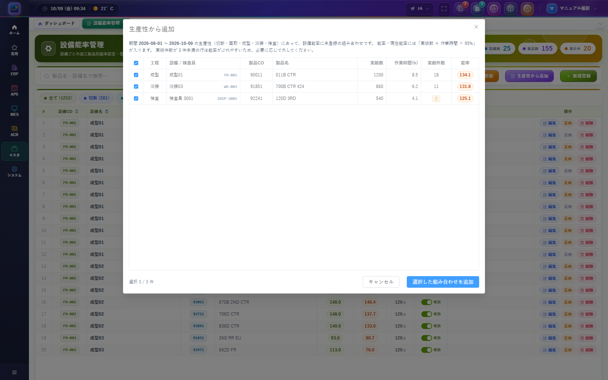
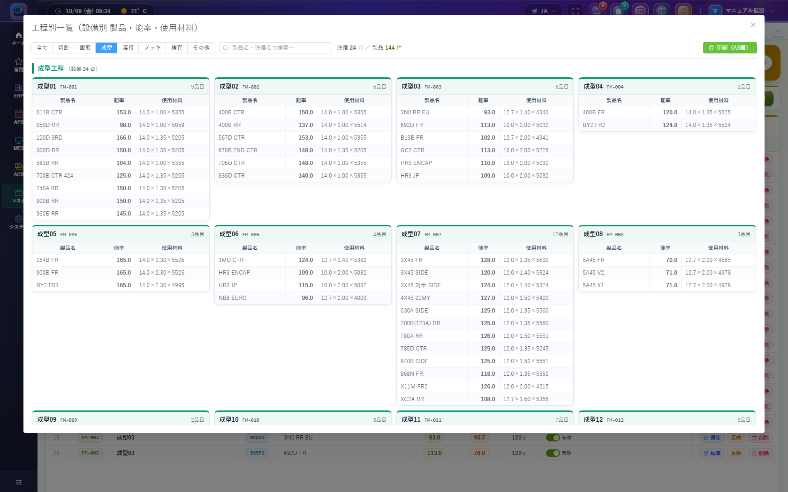

SMART-EMAPS
設備ごとの製品別能率を登録・更新・出力する
設備能率管理は、設備（検査工程は検査員）と製品の組み合わせごとに、計画で使う能率と段取時間を保持するマスタです。切断・面取・成型・溶接・メッキ・検査の各計画画面は、ここにある有効な行を参照します。
画面図は 2026年10月9日の開発環境（マスタ管理 → BOM → 設備能率管理）で撮影しています。件数は撮影時点の登録内容です。
| できること | 説明 |
|---|---|
| 一覧・絞り込み | 工程タブ、キーワード、設備、製品名で行を探す |
| 登録・編集・削除 | 設備と製品を選び、能率・段取時間・状態・備考を保存する |
| 状態の切替 | 一覧のスイッチで有効 / 無効をすぐ保存する |
| 現在能率の更新 | 直近 3 か月の生産性から参考値を計算し、現在能率だけを書き換える |
| 能率への反映 | 確認のあと、その行の現在能率を能率へコピーする |
| 生産性から追加 | 生産性にあって、このマスタに無い組み合わせを新規行として追加する |
| 工程別一覧 | 設備ごとのカードで、製品名・能率・使用材料を見る。A3 横で印刷できる |
| 印刷 / Excel | いまの絞り込み結果を、ページをまたいでまとめて出力する |
メニューに項目が無い場合は、ロールにこの画面の参照権限が付いていません。管理者にメニュー権限の付与を依頼してください。
| 表示 | 意味 |
|---|---|
| 設定数 | 全工程の登録件数（タブ「全て」の件数） |
| 設備数 | いまの絞り込み結果に含まれる設備の種類数 |
| 製品数 | いまの絞り込み結果に含まれる製品の種類数 |
| 表示中 | いまのページに出ている行数 |
左から、キーワード、設備、製品名、そして次のボタンです。
| ボタン | 必要な権限 | 動き |
|---|---|---|
| クリア | 参照 | キーワード・設備・製品名を消し、1 ページ目を読み直す |
| 工程別一覧 | 参照 | 設備カードの一覧ダイアログを開く |
| 印刷 | エクスポート | 絞り込み結果を A4 縦で印刷する |
| Excel出力 | エクスポート | 絞り込み結果を .xlsx でダウンロードする |
| 現在能率更新 | 編集 | 全件の現在能率を再計算する（能率は変えない） |
| 生産性から追加 | 登録 | 未登録の組み合わせを選んで追加する |
| 新規登録 | 登録 | 1 件を手入力で登録する |
権限が無いボタンは表示されません。
全て / 切断 / 面取 / 成型 / 溶接 / メッキ / 検査 / その他。括弧内は、その工程の件数です。タブを変えると 1 ページ目に戻り、設備の候補もその工程だけになります。
1 ページの件数は 20 / 50 / 100 から選べます。画面下に「表示: ○ / ○ 件」と出ます。印刷と Excel は、表示中のページだけではなく、絞り込みに合う全件が対象です。
プレースホルダは「製品名・設備名で検索…」です。入力して約 0.3 秒待つと検索します。設備名、設備 CD、製品名、製品 CD、備考などに部分一致します。× で消せます。
候補は「設備名（設備 CD）」です。入力して絞り込めます。× で解除できます。
INSP- で始まるため、検査タブの候補に出ます。候補は製品名と製品 CD です。設備を選んでいるときは、その設備に登録されている製品だけに絞られます。設備を変えて、選んでいた製品がその設備に無ければ、製品の選択は外れます。
| 列 | 内容 |
|---|---|
| # | 絞り込み全体での通し番号 |
| 設備 CD | 設備マスタのコード。検査員は INSP- ＋社員番号（例: INSP-3001） |
| 設備名 | 設備名。検査員の行は氏名 |
| 製品 CD / 製品名 | 製品マスタのコードと名称 |
| 能率 | 計画が参照する値。小数第 1 位。単位が入っている行は数値の右に単位が付く |
| 現在能率 | 直近 3 か月の生産性 × 95%。未計算、または実績が無い行は「—」。数値にマウスを置くと更新日時が出る |
| 段取 | 段取時間（分）。未設定は「—」 |
| 状態 | 有効 / 無効のスイッチ。編集権限があると、切り替えた瞬間に保存される |
| 備考 | 自由記入。生産性から追加した行は、期間付きの自動文が入る |
| 操作 | 編集、反映、削除。権限が無い操作は出ない |
列見出しをクリックすると、その列で並べ替えできます。初期の並びは設備名の昇順です。
設備または製品が空だと「設備を選択してください」「製品を選択してください」が出て保存できません。能率が空、または 0 未満でも保存できません。
行の 編集 を押すと「能率設定編集」が開きます。項目は新規登録と同じです。保存すると「能率設定を更新しました」と出ます。
行の 削除 を押すと「この能率設定を削除しますか？」と聞かれます。削除 で確定し、キャンセル で中止します。削除した行は元に戻せません。計画側でその組み合わせを参照している場合は、先に影響を確認してください。
一覧のスイッチでも、編集画面の「有効 / 無効」でも変えられます。無効の行は工程別一覧には出ません。計画側で無効行を使うかどうかは、参照している各画面の条件に従います。
現在能率更新 は、画面に見えている行だけではなく、対象工程の登録行すべてを一度に更新します。タブや絞り込みでは範囲は狭まりません。
| 表示 | 意味 |
|---|---|
| 算出 | 期間内の実績から現在能率を書き込んだ件数 |
| 実績なし | 対象工程だが、一致する実績が無く、現在能率を空にした件数 |
| 対象外 | 計算しない工程の件数。メッキはここにはいり、値は変わりません |
現在能率は参考値です。計画用の能率に採用するときだけ、行ごとに反映します。
複数行を一括で反映する機能はありません。採用する行だけを確認して反映してください。
各工程の生産性に実績があるのに、設備能率マスタに同じ組み合わせが無いとき、その組み合わせを新しい行として追加します。
| 列 | 内容 |
|---|---|
| 工程 | 切断 / 面取 / 成型 / 溶接 / 検査 |
| 設備 / 検査員 | 設備名と設備 CD。検査は検査員氏名と INSP- コード |
| 製品 CD / 製品名 | 製品マスタにある製品だけが候補になります |
| 実績数 | 期間内の実績数量の合計 |
| 作業時間(h) | 期間内の作業時間の合計（時間） |
| 実績件数 | 集計に使ったレコード数。3 件未満は黄色のラベル |
| 能率 | 追加後に能率と現在能率の両方へ入る値 |

ツールバーの 工程別一覧 で開きます。タイトルは「工程別一覧（設備別 製品・能率・使用材料）」です。1 設備が 1 枚のカードになり、カード内は製品名・能率・使用材料の 3 列です。
| 条件 | 一覧 |
|---|---|
| 状態が有効 | 出る |
| 状態が無効 | 出ない |
| 製品区分が試作品、補給品 | 出ない |
| 設備名に「成型」と「NC」の両方を含む（成型 NC） | 出ない |
メイン画面の一覧には、無効行や試作品もそのまま出ます。除外されるのは工程別一覧だけです。
製品マスタの材料コードを優先します。材料コードが空の製品は、状態が active の製品 BOM 明細にある材料を、行番号順に並べます。材料マスタに名称があれば名称を表示します。

ツールバーの 印刷 は、メインの一覧を印刷します。工程別一覧の印刷とは別です。
見出しは「設備能率管理（絞込結果）」です。キーワード、設備、製品、工程、件数、印刷日時が付きます。本文は設備ごとにまとまり、列は製品 CD、製品名、能率、段取、状態、備考です。ポップアップがブロックされると「ポップアップがブロックされました」と出ます。ブラウザでこのサイトのポップアップを許可してください。
ファイル名の例: 設備能率管理_成型_20261009_0905.xlsx（工程名と年月日時分）。シート名は「設備能率_工程名」です。ヘッダー行は太字です。
| 列 | 形式 |
|---|---|
| 工程 | タブが「全て」のときは設備から判定した工程名。特定タブのときはそのタブ名 |
| 設備 CD / 設備名 / 製品 CD / 製品名 | 文字 |
| 能率 / 現在能率 / ステップタイム(分) | 数値（空のときは空白）。Excel 上で並べ替えや計算ができます |
| 単位 | 登録されているときだけ文字が入る |
| 現在能率更新日時 | 年月日時分。未更新は空白 |
| 状態 | 有効 または 無効 |
| 備考 | 文字 |
小数第 1 位で四捨五入します。日ごとの能率を平均した値ではありません。生産性分析画面の総合能率と同じく、期間合計どうしで割ります。
実行日が属する月を含む、直近 3 カレンダー月です。開始日はその 3 か月前の月の 1 日、終了日は実行日です。
実績数量が 0 より大きく、作業時間も 0 より大きいレコードだけを分子・分母に入れます。
| 工程 | 元データ | 設備の取り方 | 数量 | 時間 |
|---|---|---|---|---|
| 切断 | 切断の生産指標 | ライン名。末尾の「号」は除いて設備名と照合 | 実績数量 | 作業時間 |
| 面取 | 面取の生産指標 | 同上 | 合計生産数が 0 より大きければその値。そうでなければ面取実績と SW 実績の合計 | 作業時間 |
| 成型 | 成型の生産指標 | 同上（成型01号 → 成型01） | 実績数量 | 作業時間 |
| 溶接 | 溶接実績 | 溶接機。生産完了の行だけ | 生産実績数 | 正味生産秒を時間に換算 |
| 検査 | 検査実績 | 設備は使わない。検査員を 1 台の設備として扱う。生産完了の行だけ | 生産実績数 | 正味生産秒。無ければ開始〜終了の秒数 |
| メッキ | 集計しません。既存行の現在能率も変更しません | |||
INSP- ＋ユーザーの社員番号（ログイン ID）です。例: 社員番号 3001 → INSP-3001。INSP-…）と製品 CD で当てます。タブ、工程別一覧、Excel の工程列、現在能率の対象判定は、同じルールです。上から順に、最初に一致した工程になります。
| 順 | 条件 | 工程 |
|---|---|---|
| 1 | 設備 CD が INSP- で始まる | 検査 |
| 2 | 設備名または設備 CD に「面取」または chamfer | 面取 |
| 3 | 「成型」または forming | 成型 |
| 4 | 「溶接」または welding | 溶接 |
| 5 | 「メッキ」、plating、または設備 CD に pl | メッキ |
| 6 | 「検査」または inspection | 検査 |
| 7 | 「切断」または cutting | 切断 |
| 8 | どれにも一致しない | その他 |
設備名の表記がこのルールと違うと、意図したタブに出ません。その場合は設備マスタの名称を確認してください。
ボタンと行操作は、マスタ画面の操作権限で出します。
| 権限 | できる操作 |
|---|---|
| 参照 | 一覧、絞り込み、工程別一覧の表示 |
| 登録 | 新規登録、生産性から追加 |
| 編集 | 編集、状態の切替、現在能率更新、反映 |
| 削除 | 削除 |
| エクスポート | 印刷、Excel出力、工程別一覧の印刷 |
権限が無い操作を実行しようとすると、操作ガードのメッセージが出て処理は始まりません。
| メッセージ | 意味と対処 |
|---|---|
| データがありません | 絞り込みが狭すぎるか、その工程に行が無い。クリアして再検索する |
| 設備を選択してください / 製品を選択してください | 登録ダイアログの必須項目。両方選んでから保存する |
| 能率を入力してください / 能率は0以上である必要があります | 能率を 0 以上の数値にする |
| 現在能率を更新しました（算出 / 実績なし / 対象外） | 更新成功。能率列は変わっていない |
| 現在能率の更新に失敗しました | 通信またはサーバのエラー。時間をおいて再実行する。再実行しても能率が勝手に変わることはない |
| 未登録の組み合わせはありません | その期間の生産性は、すでにマスタへ反映済み |
| 追加できる組み合わせはありません | ダイアログを開いたあと候補が空。製品マスタ未登録やライン不一致の注記を確認する |
| ○ 件を追加しました | 選択した組み合わせを新規行として登録した |
| 現在能率 ○ を能率に反映しますか？ | 反映の確認。キャンセルすれば能率は変わらない |
| この能率設定を削除しますか？ | 削除の確認。削除は元に戻せない |
| 印刷対象の行がありません / 出力対象の行がありません | 絞り込み結果が 0 件。条件を緩める |
| ポップアップがブロックされました | ブラウザのポップアップ許可が必要 |
| ○ 件を Excel に出力しました | ダウンロード成功。保存先はブラウザのダウンロードフォルダ |
INSP- で始まります。工程別一覧や Excel でも、設備名の位置に検査員氏名が出ます。以上。本書の対象は設備能率管理画面（2026年10月9日時点）です。計画画面側で能率をどう工数に換算するかは、各計画画面の説明に従ってください。